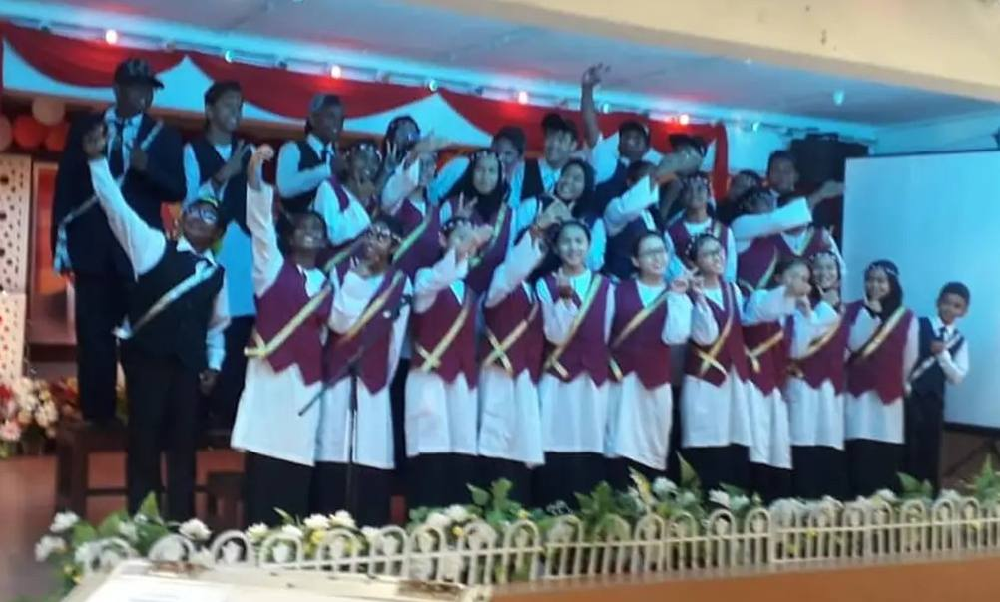
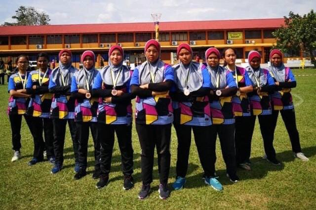
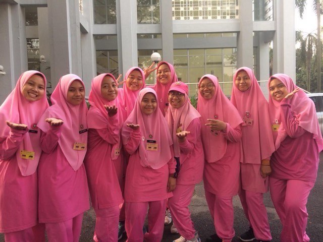

Achievements & School Representation
- Represented the school in the Choral Speaking programme.
- Participated in netball tournaments and secured third place.
- Joined the Malaysia Future Leader School (MFLS) Programme at the national level.
- Selected to join the Ijtimak Penerapan Puteri (PPIM) Programme at the national level.
- Participated in the Puteri Islam State-Level Camping Programme.
- Facilitator of Nadwah Kepimpinan : Kem Pewaris.
- Joined the Digital Literacy Programme organised by Perpustakaan Sultan Badlishah, UiTM Kedah.
- Attended a Mendeley Training Programme to enhance research and citation skills.
- Participated in SULAM – Hikayat Ilmu: Reviving the Spirit of Reading Programme, serving as a member of the Protocol Committee.
- Actively took part in programmes organised by UiTM.

Choral Speaking

Netball Tournament

MFLS Programme

Ijtimak Penerafan Puteri
Leadership & Co-Curricular Roles
- Treasurer of the Sixth Form Student Representative Council (MPP), SMK Seri Teja.
- School Prefect from Form 1 to Form 5.
- President of Puteri Islam SMK Seri Teja (2020).
- President of Netball Club (2020).
- President of the School Cooperative Club (2020).